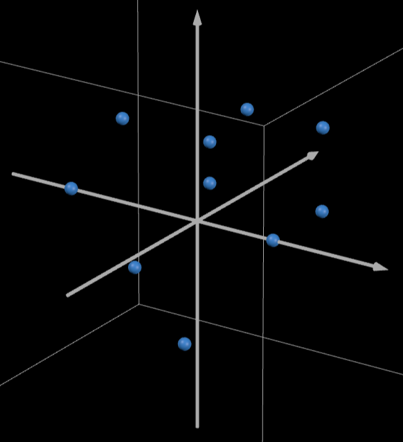
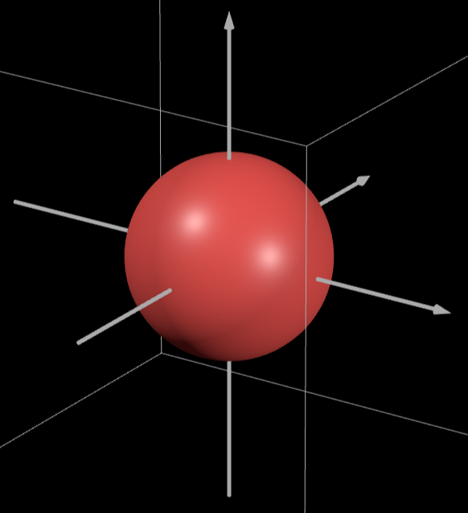
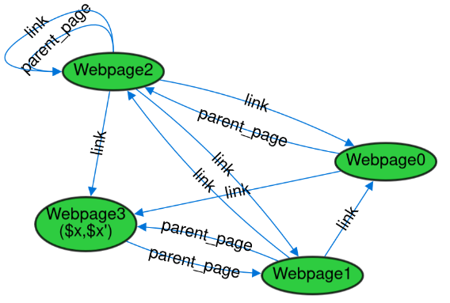

Alloy Analyzer delavnica
Janez I. Jereb
Kaj je modeliranje programja?
Zakaj modeliramo programje?
- načrtovanje programskih sistemov
- razumevanje obstoječih sistemov
- razjesnitev misli
Veriga formalnih metod
flowchart TD
A[Ideja] --> B[Koda]
flowchart TD
A[Ideja] --> B[Formalizacija]
B --> C[Koda]
flowchart TD
A[Ideja] --> B[formalizacija zahtev kode]
B --> C[formalizacija delovanja kode]
C --> D[Koda]
flowchart TD
A[Ideja] -->|Elaborations| B[formalizacija zahtev kode]
B --> C[formalizacija delovanja kode]
C -->|Refinements| D[Koda]
flowchart TD
AA[Stranka] -->|Requirements engineering| A
A[Specifikacija] -->|Elaborations| C[Formalizacija]
C -->|Refinements| E[Koda]
E --> AA
Kako modeliramo?
neinteraktiven program
- začetno in končno stanje
- ponavadi je lažje formalizirati
- Alloy ni ravno primeren
Interaktiven program
- definiraš začetno stanje/okolje
- definiraš akcije nad sistemom oz. prehode med stanji
- invariante
Modeliranje stanj
- ponavadi imamo v mislih, da stanje predstavlja prirejanje spremenljivk
- boljši način: imamo stvari in odnose med njimi
- oz. imamo tabele
Kaj je Alloy Analyzer?
- modelirni jezik
- iskalnik modelov
Testiranje
Bounded model checking
Z sig deklariramo nov tip objekta.

sig Object {}
Če jih je več so med seboj disjunktni

sig Object1 {}
sig Object2 {}
Opredelitev podmnožic

sig Object {}
sig A in Object {}
sig B in Object {}
Opredelitev disjunktne podmnožice

sig Object {}
sig A extends Object {}
sig B extends Object {}
Kako je z mešanjem?

sig Object {}
sig B in Object {}
sig A, C extends Object {}
Lahko zahtevamo, da v množici ni "drugih elementov"

abstract sig Object {}
sig A in Object {}
sig B in Object {}
sig A {} // neopredeljeno število A-jev
one sig B {} // natanko en element B
some sig C {} // vsaj en element C
lone sig D {} // eden ali noben element D

Morda slika s puščicami
Primer s tabelami
daj primer array.index
formalno
\[\begin{aligned}E[p . q]i = \{(&p_1,..,p_{n-1}, q_2,..,q_m) |\\ &(p_1,..,p_n) \in E[p]i \land\\ &(q_1,..,q_m) \in E[q]i \land \\ &p_n = q_1\}\end{aligned}\]
A -> n B
vsak a se slika v n elementov B
A -> one B -- funkcija
A m -> B
v vsak B se slika m elementov A
A one -> B -- injektivna relacija
A m -> n B
velja A m -> B in A -> n B
A one -> one B -- injektivna funkcija
oz. ker sta A,B (vedno) končna -- bijekcija
Morda slika s puščicami
Primer s tabelami
daj primer array.index
formalno
\[\begin{aligned}E[p . q]i = \{(&p_1,..,p_{n-1}, q_2,..,q_m) |\\ &(p_1,..,p_n) \in E[p]i \land\\ &(q_1,..,q_m) \in E[q]i \land \\ &p_n = q_1\}\end{aligned}\]
slika s puščicami
slika s tabelami
formalna definicija
Naloge:
- par primerov operacij (večih hkrati)
- morda kakšen obratno??
Izberi nek primer in naredi zaporedje slajdov, kjer uporabimo relacije
za izraz tega
isti primer kot pri relacijah
naštej builtin module
## Praktičen del
Daj naloge iz:
https://github.com/haslab/Alloy4Fun/wiki/Examples
denotacijska iz knjige
denotacijska za SAT
sig Webpage {
parent_page : lone Webpage,
link : set Webpage
}
Seveda objekti podedujejo stvari
abstract sig FileSystemObject {
parent : one Folder
}
sig Folder extends FileSystemObject {}
one sig Root extends Folder {}
sig Content {}
sig File extends FileSystemObject {
content : one Content
}
V Alloyu je vse relacija
Vse je množica n-teric
sig C {
f : C
}
f je relacija {(C0,C1), (C0,C2), ...}
1 je relacija {(1)}
C je relacija {(C0), (C1), ...}
Torej operacije z relacijami delujejo "povsod"
| univ | množica vseh elementov |
| none | prazna množica |
| iden | relacija med elementi in samim sabo |
| + | unija množic (∪) |
| & | presek množic (∩) |
| - | odštevanje množic |
| = | enakost množic |
| in | relacija "je podmnožica" (⊆) |
| set | potenčna množica |
| disj | relacija disjunktnosti |
| ^r | tranzitivna ovojnica r |
| ~r | obrat relacije (x r y → y r x) |
| *r | tranzitivno-refleksivna ovojnica relacij |
Produkt relacij ->
Kompozicija relacij poveže dve relaciji.Kompozicija relacij .
Kompozicija relacij poveže dve relaciji.Operator []
r.s = r[s] (r.s).t = r.s[t] kaj z x[a,b]Zožitev relacij <:,:>
Namen je odstraniti kakšne povezave.Povozi ++
Abstrakcija
Predikat
pred ime[a:s, b:t, ...] {
...
}
Funkcija
fun ime[a:s, b:t, ...] : r {
...
}
Lokalna spremenljivka
let v1 = e1, v2 = e2, ... | e
Modul
open path/name[A] (as r)
module name[sig]
Omejevanje modelov
Dodajanje pogojev v sig
sig A {
...
} {
(dodani pogoji)
}
Uporaba fact
fact (ime) { ... }
Iskanje primerov
run (ime) {dodatni pogoji}
for (max število vseh)
but (exactly) količina ime,...
Preverjanje lastnosti
check (ime) {dodatni pogoji}
for (max število vseh)
but (exactly) količina ime,...
Logika
| ! | not | logična operacija negacije |
| && | and | logična operacija in |
| || | or | logična operacija ali |
| <=> | iff | logična operacija ekvivalence |
| => | implies | logična operacija implikacije |
| b implies c else d b => c else d |
logični pogojni stavek | |
| all x: e | F | F velja za vse x v e |
| some x: e | F | F velja za nek x v e |
| no x: e | F | F velja za vse x v e |
| lone x: e | F | F velja za največ en x v e |
| one x: e | F | F velja za natano en x v e |
| all disj x, y: e | F | F velja za vse različne x, y v e |
| some x: lone e | F | F velja za nek x v e ali pa nobenega |
| lone x: set e | F | F velja za vse podmnožice x v e |
Števila
-
Operacije
#, plus, minus, mul, div, rem
-
Relacije
=, <, >, =<, <=, >=, !=, !<, !>, !=<, !>=
Vsota
- sum x: lone e | ie
- e.sum
- (1+3) >= 4 <==> (1+3).sum >= 4
- {x1: e1, x2: e2, ... | F}